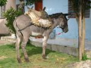

Talavera de la Ruina
 De: La Frikipedia, la enciclopedia extremadamente seria.
De: La Frikipedia, la enciclopedia extremadamente seria.
| De la serie ciudades del mundo:
|
| Talavera de la Ruina
|
|
|
|
| (Bandera)
|
(Escudo de armas)
|
|
| Topónimo oficial
|
Talavera de la Ruina
|
| País
|
España
|
| Código postal
|
45milnosecuántos
|
| Superficie
|
poca,muy poca
|
| Altitud
|
234m antes de botellón 645m después (por la mierda acumulada principalmente)
|
| Distancia
|
a hora y cuarto de tos los lados
|
| Fundación
|
7000 a.F (antes de Ford)
|
| Población
|
20.000 más que Toledo(siempre)
|
| Gentilicio
|
Anatfabestias o talaveranos
|
| Alcalde
|
Rivas a-Rivas
|
| Aunque digan lo contrario es un pueblo grande
|
Municipio semi-urbano, pueblo o villa , también llamada CIUDAD por los muchos publerinos que la habitan. Situada en medio de la nada y limitanda por los cuatro puntos cardinales por la nada. Está surcada por el río Tajo que tiene su máximo caudal a las 22:30 cuando todos los abuelos se van a la cama después de ver escenas de matrimonio y vacíar sus vejigas.
Es territrio cani pero poco a poco los frikis la están conquistando para acabar por dominar el mundo por el plan AE (Aliarse con Pinki y Cerebro).
Historia
Talavera fue creada allá para el año 7000 a.C, por un comando BSK (Boys Scouts Kinkis) procedentes de las tres mil viviendas, que estaban de vacaciones de semana santa. Y todo fue bien hasta que se sucedieron una serie de acontecimentos tales como la creacion de murallas romanas (que fueron tiradas, destruidas , pintadas ,violadas, robadas o utilizadas como meadero unos años más tarde por una panda de unos 80.000 paletos que ahora se quejan por que toledo tiene unas y ellos no) que jodieron todo el mecanismo de no-defensa kinki, la creacion de la Guardia civil, la tortilla de piedros, y el frio que hacía en invierno que los obligaba a retirarse a sus casas a hibernar. Y tras sucesivos siglos de construcción y marginación a los kinkis hacia barrios como el Paredón o Patrocinio, se consiguió la estabilidad del pueblo este. Posterior mente comenzo un Extasis de Exodo hacia Talavera de la ruina, asi pues, cientos de Namekianos, wookies y Dareck emigraron hacia talavera ¨ entonces llamada talavera de Falete ¨. Falete se asentó como lider de esta ciudad/pueblo y decidio llamarlo ¨aldea oculta de la reina¨ (refiriendose a el como reina).
Pero pronto vio frustado su liderazgo cuando un grupo de droides de combate y Orcos de mordor asaltaron la ciudad/aldea y derrocaron a Falete.
Economía
La mayoría de la población cani empezó pronto.
El 90% de la Economía de la polis-estado se basa en la Cerámica, tradición cantamañanera consistente en hacer paragüeros, ceniceros y platos pa colgar en la terraza con la cara de la virgen, del Quijote o del niño de Valtorre. El 5% subsiste de la venta ilegal a menores de sustancias psicotropicas tabaco y alcohol.
El 5% restante de la población talaverana (en su mayoría gitanos de los bajos fondos) sobrevive a base de cometer pequeños hurtos en el centro o las afueras que para el caso es lo mismo porque extension poca.
Ferias
Otro de los factores importantes de la economia talaverana se consigue en sus Ferias de septiembre y mayo. Ferias de tres dias que por lo general y obra y gracia del gobierno, duran 6 o 7.
Repletas de casetas a las que no hace falta ser miembro ni socio ni nada para entrar (jodete feria de Sevilla) lo cual hace que sea un paraiso del alcojolismo, los porros y toda la mierda que puedas pillarle al moro. Destacan tambien la coordinación de las actuaciones musicales que aseguran el mayor número posible de votos para las elecciones, vease:
- Viernes: Actuación de grupo de Rock, Punk o similar para el voto joven y generalmente antisistema
- Sabado: Actuación de algun ñoño de O.T. para el rebaño sin cerebro con derecho a voto
- Domingo: Actuación de Gitaneo. Para ese sector tan importante en Talavera como es el Comando G. G de Gitano.
- Lunes: Actuación de algún mindungui para aguantar el empalme.
- Martes: Verbena para los agüelos y agüelas del lugar.
Todo ello acompañado de diversas corridas de toros, atracciones bailaperras para los niños y un mar de los chiringos ya citados donde alcoholizarse por dos euros.
- Kps3: dia festivo que alguien se inventó consiste en tirar aros
Población
 *El Ébora-bús es el medio de transporte más rápido de Talavera.
Es la población de unos 80.000 habitantes en la que se bebe más acohol por habitante y hay más gitano por Km cuadrado.
Caracteristicas Generales
- La palurda poblacion de este secarral, suele utilizar nombres como Moises, Basilio, Juanra, Josue o Salomon.
- El talaverano suele ser
paleto pueblerino, maniplable, agresivo pero inofensivo y cateto.
- No prununcia bien la s la suele cambiar por j (ejque) ,por ll (rellirse) o por una h aspirada( tuverah).
- Suele añadir una `a´ delante de palabras femeninas y las combierte en masculina (afoto,arradio)porque se equiboca con palabras que usa a diario como arado.
- Desprecia a cualquier ser que hable correctamente o no entienda su jerga.
- No sabe lo que es andar ya que la mayoría delas cosa se encuentran a la otra punta de la CIUDAD y coge el coche hasta para comprar el pan.
Religión
Afoto del típico paleto talaverano
La mayoría de la población de esta CIUDAD practica el mahouismo es decir veneran al dios Mahou para ello,los más veteranos se dirigen todas las tardes al bar más cercano para con sus ``amigos´´ ingerir la mayor cantidad de cerveza en el menor tiempo posible, mientras que los más jóvenes se dirigen a la cobacha (botellón).
El núcleo de la ley mahouista se expresa en cinco preceptos básicos, los cinco pilares de la religión que todo buen mahouista debe cumplir:
- La profesión de fe. Ante testimonios y en los principales momentos de la vida, el creyente tiene que recitar la fórmula: «No existe ningún Dios excepto Latá, y Mahuoma es su profeta» en la barra del bar o en su defecto la cobacha.
- La plegaria ritual.Una vez por la tarde, a horas preestablecidas y en dirección a Irlanda, los fieles tienen que dirigirse a Mahou con la cerveza en la mano.
- La
limosna propina. La propina tiene dos modalidades: la ejercida espontánea y libremente para agradar Mahou y la reglamentada y obligatoria (zakat) según la cual todos los mahouistas han de aportar al camarero y a la comunidad una décima parte de sus rentas y capital.
- El ayuno durante el mes de Junio y Septiembre.Los mahouistas dejan de beber para dedicarse en cuerpo y alma a las recuperaciones.
- La peregrinación a la Fabrica. Por lo menos una vez en la vida, los mahouistas adultos que disponen de medios suficientes, tienen que peregrinar a la Fabrica
Clases sociales

*Cientos de carteles como este situados en las inmediaciones del río advierten de la peligrosidad de este.
- Paleto:es un 25% de la población son los típicos viejos (aunque este mal en ocasiones empieza a manifestarse a los 14-15 años) que se sientan a la puerta (o en su defecto la terraza) a ver el tiempo y la gente pasar.Suele ser trabajador y mal hablado y nunca admitirá ser paleto y defenderá Talavera como una CIUDAD.
- Gitano:son una gran parte de la poblacion viven por Patrocinio y no suelen dejatse ver, aunque cuando salen suelen cometer hurtos en el centro con intimidación.estos robos los suelen cometer a partir de los 5 años.
- Cani-paleto:suelen manifestaerse a partir de los 13-14 años suele transladarse por la CIUDAD en su amoto mientras pone el arradio a tope ,de lunes a viernes se va a la cobacha detrás del unicash,los fines de semena descansa.Suele meterse con los frikis pero suele quedar mal porque este le responde hablando con corrección y el otro se queda impresionando diciendo eso ``De que te pasa en la boca primo´´.Dentro de este mismo grupo se podrían esncontrar las Jennys o Jessys.
- Bacala-paleto:son iguales que los anteriores pero algo más agresivos.
- Pseudoheavy:algunos de los
paletos pueblerinos campesinos CIUDADanos se dedican a formar pequños grupos de musica sin ninguna esperanza y rondar por los pueblos aburriendo divirtiendo a los habitantes de estos.Se dejan greñas , se visten raro y dicen que son heavys (algunos tampoco se duchan).
- EMO:es una pequeña parte de la población aún no reconocida pero existente. Como características principales encontramos la costumbre a taparse un ojo con el pelo, y la tendencia al suicidio.
- Friki-paleto:es una minuscula parte de la población que está en proceso de despaletizarse y convertirse al pastafarismo.
- Friki-inteligente:es una mínima parte de la población que está creciendo ,este es el friki normal pero aqui parece más inteligente.
- Skaters: Actualemente pululan unos cuantos que también estan mezclados con canis, hay grandes promesas pero seguro que caen en las drogas.
- Rumanos, Sudamericanos y Chinos:otra parte de la población que aumenta por momentos.
- Punks:no existen, pero un ser marginal que necesita sentirse dentro de un grupo social para darle sentido a su vida se ha empeñado en escribirlo
- Super heroes friki/otakus: seres que se dejan ver de tanto en cuando.
Monumentos y lugares de interés

*El escudo muestra dos talaveranas frente a la muralla que posteriormente destruirian
La verdad es que Talavera no tiene mucho interes pero estos son uno lugares importantes(para ser un pueblo)de Talavera:
- Antiguo Ayuntamiento (no hizo nada por Talavera)
- Ayuntamiento (
no hizo nada por Talavera este robó)
- Basíli(s)ca de Nuestra Señora del Prado (esta es la de las fiestas)
- Capilla del cristo de los Mercaderes
- Casa de la panadería (que CIUDAD tiene una casa de la panadería??)
- Convento del Carmen
- Convento de las Madres Bernardas (bernarda estaría orgullosa)
- Convento de las Madres Carmelitas
- Cines Ebora (lugar de reunion de pinks y canis (donde de dan por culo mutuamente, se entiende)
- Convento de San Benito
- Convento de Santo Domingo (Dios del cani y el bacala)
- Monasterio de San Prudencio
- Iglesia de San Andrés
- Iglesia de San Francisco (el 99% de la poblacion es incapaz de chuparse el codo)
- Colegiata de Santa María
- Iglesia de Santiago el Nuevo (hijo de Santiago el Viejo)
- Iglesia de Santiago el Viejo (padre de Santiago el Nuevo)
- Iglesia del Salvador
- Jardines del Prado (lugar de encuentro de los canis para alcoholizarse)
- Museo de Cerámica Ruiz de Luna (historia sobre la economía talaverana)
- Museo Etnográfico (historia sobre el bacala, cani y gitano)
- Palacio de Villatoya
- Puente de Hierro,(lugar de interes??)
- Puente viejo (este fue violado)
- Puerta de Sevilla (sevilla??)
- Puerta de Zamora (zamora??)
- Teatro Palenque
- Teatro Victoria (el 75% de las personas que se han leido el parentesis 14 lo han intentado)
- Muralla y torres albarranas(estas fueron destruidas)
- Casa-Palacio de la Calle del Sol
- Villa Romana de Saucedo (ondesta eso?)
- Unicash (habitat del cani)
- La plaza de toros (lugar de encuentro de prostitutas y clientes)
- Fierabras (lugar de reunion de Pseudoheavys, Frikis, Emos y Canis)
- Videoclub Hollywood (Igual que en el Fierabras pero con jarras de cerveza a 2€)
- Obelix (hamburgeseria que sirve hamburgesas de tres kilos donde se reunen frikis y familias)
Idioma
-"El Talaverano", que es en realidad un dialecto del extremeño, es decir, es extremeño mal hablado.
Frases célebres
-"La virgen!!" (estoy sorprendido!!)
-"Vamos a la cobacha!!!" (nos alcholizamos???)
-"Sabeh?" (me estas comprendiendo o necesitas que te lo repita?
-"Andiunbar?" (necesito alcholizarme!)
-"Andiamos?" (hacia donde nos dirigimos?)
-"Esto es Talavera boloh!!" (en estos instantes se encuentra en Talavera de la Reina!!)
-"Tuverah!" (estoy completamente de acuerdo!)
-"Haaaaaaaa!!!!" (no puedo terminar de creérmelo!!!)
-" Eho ta la otra punta!!!" (Eso se situa muy lejos de donde se encuentra usted en estos momentos)(si algun talaverano te dice eso alguna vez no le agas caso ,estará a unos 3 minutos andando)
-"Madre!!!" (Es un sinónimo de la expresion 1)
-"Sinencambio" (sin embargo ó en cambio)
-"Buenosmal" (menos mal ó qué alivio)
Curiosidades
Cani fantasma talaverano vestido con el traje típico del pueblo con el que suelen ir a las ferias
- Hay un Carrifull a las afueras de la CIUDAD, con un novisimo parque comercial que tiene un decathlon y...un decathlon. Ahora nos han abierto un Corte Inglés. El Corte Inglés ha supuesto una auténtica revolución, cambiando las costumbres locales tales como irse de tapas a la facultad, para que ahora todo el mundo (los 80.000 habitantes al unísono) vayan a ver la cafetería del Corte Ingles todos los sábados por la tarde. Tambien se ha cerrado la zona de beber vulgarmente conocida como la cobacha porque se supone que el ruido molesta a los vecinos. La asociacion de bebedores menores de edad se ha transportado a las calles de enfrente y detrás del unicash.
- Existe una amplia empresa de autobuses que consta de 9 lineas(ya que unas 5 lineas se las comieron y pasaron por ejemplo de la 7 a la 9)que todas van a parar al carrefull llamada ebora-bus(todavia nadie se a atrevido a preguntar el porque del nombre)que utiliza la gran mayoria de los talaveranos para hacer lo que se tardaría de 3 a 6 minutos a pie.Lo malo de hacer uso de este servicio es que solo hay un autobus para cada linea por lo que llega uno cada media hora.
- La CIUDAD esta surcarda por el... río? Tajo una alcantarilla abierta donde van a parar todos los desperdicios de la ciudad a su lado se encuentra un bonito paseo (que bonito será par la vista porque lo que es para el olfato chungo) con el que el alcalde consiguio unos suculentos votos.A o largo del río se pueden observar campartas en las que se leen mensajes tales como no al trasvase o pequeñas centrales hidroelectricas(
pa que más si es un pueblos).En el se practican deportes tales como el piragüismo, remo, arrojar basura o pesca.En fin un pequeño Manzanares, toda CIUDAD que se precie tiene su río contaminado ¿no?(Madrid,Londres,París,Nueva York...)
- Al construir el Corte Inglé paleto hicieron un aparcaminto de autobuses para que funcionara de estación de autobuses, al ir a utilizarlo y meter el autobús por el túnel descubrieron que no cabía. Para solucionar este conflicto tuvieron que desinflar las ruedas y remolcarlo hacía trás para comenzar las obras de remodelación y construir un túnel más grande.
Personajes Ilustres
- Jose María Gómez: literato más importante que ha dado esa nuestra CIUDAD de la Cerámica.
- Álvaro Bautista: campeón del mundo de motocilcismo en 125 c.c., experto en caballitos y ademas es talaverano,no toledano.
- Gwyneth Paltrow: cuando tenía 13 años fue enviada a Talavera para superar sus problemas con la bebida.
- El Gran Guayoming: médico famoso.
- Ruiz de Luna: Famoso ceramista
- Fernando de Rojas: Trajo la luz y la sabiduría hace unos cuantos siglos a la ciudad.
- Pepito Piscinas: un navalcarnerano tartamudo que salvó a un niño en una piscina.
- Berta Collado: La golfilla esa del Sé lo que hicisteis.
- Oramba: este no es un personaje pero esta por todos los lados.
- Obama: primo segundo de Gwyneth Paltrow, tras visitarla fue iluminado y fue candidato a presidnte de los EEUU.
- Cid Highwind, famoso constructor de naves
- La señora de la esquina, esa que da amor a cambio de dinero
- Capitán Garfio: un extravagante personaje que se dedica a buscar a peter barra de pan, peter parquer y peter griffin
Autor(es):
- Nexo
- Frikiman
- Aque
- Viento
- Ant0nim0
- 0rabla
- Mencias
- Imo vaiolens
- Yo Tu El
- Otra vez YO
Frikipedia 2005-2016, Licencia
GFDL 1.2 - Extraído por FrikiLeaks